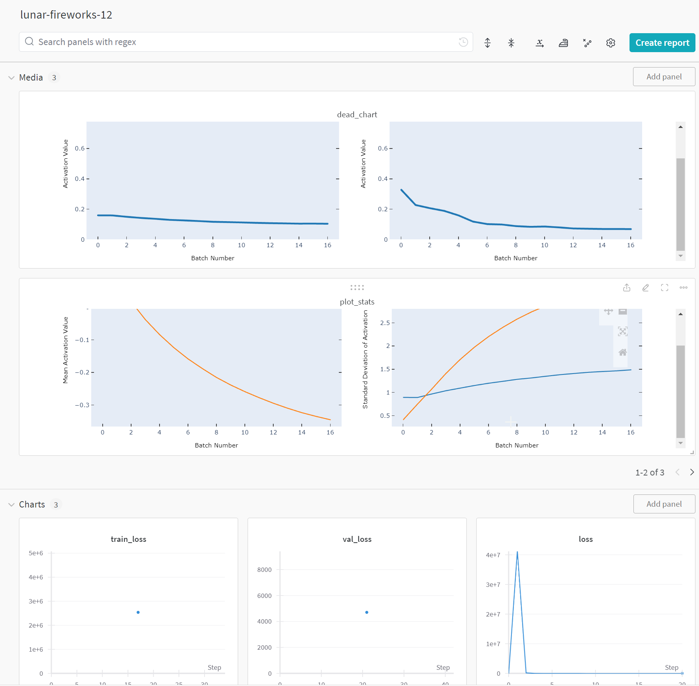

The blog will run you through a simple training loop and help understand how to intergrate weights and bias into your training loops using the mini ai from Fast AI.
What is weights and bias
Weights and Bias is a machine learning platform similar to Tensorflow Tensor boards where it helps keep track of machine learning runs and helps visualise and share the results. Its hosted by weights and bias and is indepent to the notebook. Due to it being indendant it can be intergrated into TensorFlow, PyTorch, Keras, and Scikit-learn. It also supports tracking and versioning of datasets, models, and other files (artifacts), facilitating better data management and model lifecycle management.
Code from previous blog posts
I will not go over the hugging face dataloaders/dataloaders as ive already shown in another blog post. The aim is to show the weights and bias loggings
all the setup code from part 1
Creating the dataset
code calapsed as we have already covered this in a previous blog post but provided for convience.
Code
# install and import the necessary libraries!pip install datasets[vision]!pip install torchevalfrom datasets import load_dataset, Imageimport osimport sysfrom datasets import Dataset, Imageimport torch# creates a DataLoader object that can be used to iterate through the datasetfrom torch.utils.data import DataLoader# Creates a transform that converts the image to a tensorfrom torchvision import transformsimport torchimport torch.nn as nnimport torch.nn.functional as Fimport torch.optim as optimfrom torchvision.transforms.functional import to_tensor, normalize# checks if the environment is local or remotedef check_if_local():# Checking for common remote environment indicators remote_indicators = ['COLAB_GPU', 'JUPYTERHUB_SERVICE_PREFIX']# If any of the indicators are present, it's likely not a local environmentifany(indicator in os.environ for indicator in remote_indicators):returnFalseelse:# Assuming local environment if none of the remote indicators are foundreturnTrue# checks if the environment is local or remote and sets the path accordinglyif check_if_local() ==False:print('Running in a remote environment, mounting Google Drive...')from google.colab import userdata api_key = userdata.get('wandb_key')from google.colab import drive drive.mount('/content/drive') data_science_folder ='/content/drive/MyDrive/Learning/data_science/' sys.path.append(data_science_folder) dataset_path = data_science_folder +'datasets_folder/gaze-points/work-laptop'else :print('Running in a local environment...')# import datasets before sys.path.append to avoid conflict with local datasets data_science_folder ='G:\My Drive\Learning\data_science' sys.path.append(data_science_folder) dataset_path = data_science_folder +"\\datasets_folder\gaze-points\work-laptop"# extracts screen coordinates from the filenames and stores in a list of tensorslabel_tensors = [torch.tensor([int(f.split('_')[-2]), int(f.split('_')[-1].split('.')[0])]) for f in os.listdir(dataset_path) if os.path.isfile(os.path.join(dataset_path, f))]# Divide the first column by 2560 and the second column by 1440label_tensors = [tensor.float() / torch.tensor([2560.0, 1440.0]) for tensor in label_tensors]# get the last 20 elements for testings purposes# label_tensors = label_tensors[:200]# gets a list of all images in a directory and stores in a list of stringsimage_files = [os.path.join(dataset_path, f) for f in os.listdir(dataset_path) if os.path.isfile(os.path.join(dataset_path, f))]# image_files = image_files[:200]# create the dataset from the image files and labelsdataset = Dataset.from_dict({"image": image_files}).cast_column("image", Image())# create a new dictionary with the images and labels# i'm not happy with having to add the labels to the dataset after as it takes alot longer# but i'm not sure how to do it in the the from_dict method above.updated_dataset_dict = {"image": dataset["image"], "label": label_tensors}updated_dataset = Dataset.from_dict(updated_dataset_dict)to_tensor = transforms.ToTensor()def transform_images_with_stack(batch):if"image"in batch:# Convert all images in the batch to tensors and collect them in a list images_tensor = torch.stack([to_tensor(image) for image in batch['image']]) images_tensor = normalize(images_tensor, mean=[0.485, 0.456, 0.406], std=[0.229, 0.224, 0.225]) # usual means nad st deviations recomended for images batch['image'] = images_tensor # Replace the list of images with a stacked tensorif"label"in batch:# Convert all labels in the batch to tensors and collect them in a list#labels_tensor = torch.stack([torch.tensor(label) for label in batch['label']]) labels_tensor = torch.stack([torch.tensor(label, dtype=torch.float32) for label in batch['label']]) batch['label'] = labels_tensor # Replace the list of labels with a stacked tensorreturn batch# Executes the transform on the dataset, the returning dataset[image] will be a tensorupdated_dataset_with_transform = updated_dataset.with_transform(transform_images_with_stack)# splits the dataset into a training and test set# the test set is 20% of the dataset# the training set is 80% of the datasetupdated_dataset_split = updated_dataset_with_transform.train_test_split(test_size=0.2)updated_dataset_split["train"][0]["label"].type()updated_dataset_split["train"][0]["image"].type()updated_dataset_split["train"][0]["image"]updated_dataset_split
data loaders (following Fast ai method)
dataset to dataloaders
code calapsed as we have already covered this in a previous blog post but provided for convience.
Code
# sets the batch size for the data loaderbatch_size =100from operator import itemgetterfrom torch.utils.data.dataloader import default_collateclass DataLoaders:def__init__(self, *dls): self.train,self.valid = dls[:2]@classmethoddef from_dd(cls, dd, batch_size, as_tuple=True, **kwargs): f = collate_dict(dd['train'])return cls(*get_dls(*dd.values(), bs=batch_size, collate_fn=f, **kwargs))updated_dataset_splitdef get_dls(train_ds, valid_ds, bs, **kwargs):return (DataLoader(train_ds, batch_size=bs, shuffle=True, **kwargs), DataLoader(valid_ds, batch_size=bs*2, **kwargs))def collate_dict(ds): get = itemgetter(*ds.features)def _f(b): return get(default_collate(b))return _fdls = DataLoaders.from_dd(updated_dataset_split, batch_size=batch_size, num_workers=0)dt = dls.trainxb,yb =next(iter(dt))xb.shapeyb.shape
Load the optimizer and learner
code calapsed as we have already covered this in a previous blog post but provided for convience.
code calapsed as we have already covered this in a previous blog post but provided for convience.
Code
# maybe i need to chang the loss. do i need to consider the batch???class TrainLearner(Learner):def predict(self): self.preds =self.model(self.batch[0])def get_loss(self): self.loss =self.loss_func(self.preds, self.batch[1])def backward(self): self.loss.backward()def step(self): self.opt.step()def zero_grad(self): self.opt.zero_grad()
Weights and bias setup and configuration
This is where we get to the juce of the blog post. Weights and bias, the lines below run through the install and import.
The activationsStats class callback collects stats on each of the models layers. It’s from the Fast.AI mini AI library with some extra details.
The initialization_neural_networks post here shows the details of this. In sumarry :
Color_dim shows a histogram shows the frequency of activations
Dead_chart shows the inactive activations
Plot_stats shows the mean and standard deviations of each of the layers
A few changes has been made. I’ve added return_fig=False to each of the charts so the function returns a matplotlib fig to pass to the weights and bias’s callback below.
import matplotlib.pyplot as plt# add 2 fig caps# improved function to include labelling for the statsclass ActivationStats(HooksCallback):def__init__(self, mod_filter=fc.noop):super().__init__(append_stats, mod_filter)def color_dim(self, figsize=(11,5), return_fig=False): fig, axes = get_grid(len(self), figsize=figsize)for ax, h inzip(axes.flat, self): im = ax.imshow(get_hist(h), origin='lower') # Using imshow directly# Add labels, title, and colorbar for clarity ax.set_xlabel("Batch Number") ax.set_ylabel("Activation Value") ax.set_title("Layer "+"str(self.index(h))"+" Activations") cbar = plt.colorbar(im, ax=ax) cbar.set_label("Frequency")if return_fig ==True:return figelse : plt.tight_layout() # Prevent overlapdef dead_chart(self, figsize=(11,5), return_fig=False): fig, axes = get_grid(len(self), figsize=figsize)for ax, h inzip(axes.flatten(), self): ax.plot(get_min(h), linewidth=3) ax.set_ylim(0,1) ax.set_xlabel("Batch Number") ax.set_ylabel("Activation Value") ax.set_title("Layer "+"str(self.index(h))"+" Dead Activations")if return_fig ==True:return figelse : plt.tight_layout() # Prevent overlapwwdef plot_stats(self, figsize=(10,4), return_fig=False): fig, axs = plt.subplots(1,2, figsize=figsize)for h inself:for i in0,1: axs[i].plot(h.stats[i]) axs[0].set_title('Means') axs[1].set_title('Stdevs') axs[0].set_xlabel("Batch Number") axs[1].set_xlabel("Batch Number") axs[0].set_ylabel("Mean Activation Value") axs[1].set_ylabel("Standard Deviation of Activation Value") plt.legend(fc.L.range(self))if return_fig ==True:return figelse : plt.tight_layout() # Prevent overlap
The weights and bias’s callback WandBC taken from jonathan witakers mini ai and slightly modified to do a few extra things i required.
a option to upload a notebook for each training run, providing the data and hte same hardware you can reproduce the same results.
add each of the activation charts to the output.
class WandBCB(MetricsCB): order=100def__init__(self, config, *ms, project='ddpm_cifar10',notebook_path=None, **metrics): fc.store_attr()super().__init__(*ms, **metrics)def before_fit(self, learn):print(notebook_path) wandb.init(project=self.project, config=self.config)if notebook_path !=None:# Log the notebook artifact = wandb.Artifact('notebook', type='notebook') artifact.add_file(notebook_path) wandb.log_artifact(artifact)def after_fit(self, learn): wandb.finish()def _log(self, d):if learn.training: wandb.log({'train_'+m:float(d[m]) for m inself.all_metrics})else: wandb.log({'val_'+m:float(d[m]) for m inself.all_metrics})# wandb.log({'samples':self.sample_figure(learn)}) wandb.log({'dead_chart':astats.dead_chart(return_fig=True)}) wandb.log({'color_dim':astats.color_dim(return_fig=True)}) wandb.log({'plot_stats':astats.plot_stats(return_fig=True)})print(d)def sample_figure(self, learn):with torch.no_grad(): samples = sample(learn.model, (16, 3, 32, 32)) s = (samples[-1] +0.5).clamp(0,1) plt.clf() fig, axs = get_grid(16)for im,ax inzip(s[:16], axs.flat): show_image(im, ax=ax)return figdef after_batch(self, learn):super().after_batch(learn) wandb.log({'loss':learn.loss})
Train the model
Simple CNN model, the purpose here isn’t to build the best model but to keep things simple to concentrate on the weights and bias’s setup and logging.
class CoordinateCNN(nn.Module):def__init__(self):super(CoordinateCNN, self).__init__()self.conv1 = nn.Conv2d(3, 32, kernel_size=3, stride=1, padding=1)self.bn1 = nn.BatchNorm2d(32) # BatchNorm for the first conv layerself.conv2 = nn.Conv2d(32, 64, kernel_size=3, stride=1, padding=1)self.bn2 = nn.BatchNorm2d(64) # BatchNorm for the second conv layerself.fc1 = nn.Linear(64*120*160, 128)self.fc2 = nn.Linear(128, 2) # Output layer for x, y coordinatesdef forward(self, x): x =self.conv1(x) x =self.bn1(x) # Apply BatchNorm after the first conv layer x = torch.relu(x) x = torch.max_pool2d(x, kernel_size=2, stride=2) x =self.conv2(x) x =self.bn2(x) # Apply BatchNorm after the second conv layer x = torch.relu(x) x = torch.max_pool2d(x, kernel_size=2, stride=2) x = x.view(-1, 64*120*160) x = torch.relu(self.fc1(x)) x =self.fc2(x)return xiw = partial(init_weights, leaky=0.1)model = CoordinateCNN()model.to()
Setting up the callback for the weights and bias’s with the correct parameters. It accepts the following :
Project : The project name that will be displayed in weights and bias
Config : Takes in the learning rate, number of epochs and the comments, the
Notebook_path : Path to the notebook, if this is left empty or isnt passed, it will not save the notebook to the training run to weights and bias.
# Replace with the path to your notebooknotebook_path ='/content/drive/My Drive/Colab Notebooks/WeightsAndBias.ipynb'wandbcb = WandBCB(project="weights_and_bias_test", config={'lr':LR, 'epochs':epoch, 'comments':'testing weights and bias'}, notebook_path=notebook_path)
cbs = [DeviceCB(),wandbcb, ProgressCB(plot=True), astats]
The code runs the results of the training loop and logs the results to weights and bias. As the training loop runs, the results are logged to weights and bias. The results can be viewed in the weights and bias’s dashboard by following the links. You can walk away and view the reults on your phone or another device and see progress live giving you the option to stop the training run if the results are not as desired.
# creates the learner object and passes the model, dataloaders (the data), loss function, learning rate,# callbacks and optimizer functionlearn = TrainLearner(model, dls, loss_func, LR, cbs=cbs, opt_func=optimizer)learn.fit(epoch)
The picture below shows a screen shot of the weights and bias’s dashboard showing the training run. The dashboard shows the loss, the accuracy and activations charts among other things like gpu usage and system metrics. Lots more you can do with this but this is a simple example to get you started.

Retreive Results
To download a notebook previously uploaded, you can use the code below to download it the root folder.